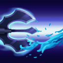
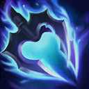

核心裝備
 無限寶珠
無限寶珠 死亡之帽
死亡之帽 虛空之杖
虛空之杖 雷霆風暴
雷霆風暴 女妖面紗
女妖面紗

以下為本站 7.2d 校正後的標準配置；實戰仍需依敵方陣容調整。


技能優先：E > W > Q

普攻會附帶持續魔法傷害，並讓飛斯穿越單位時更靈活。
穿過指定敵人造成魔法傷害並附帶普攻命中特效。

被動讓普攻附加持續傷害；主動強化下一次普攻並在擊殺時返還部分冷卻。
跳上三叉戟進入不可被選取狀態，再落地造成範圍傷害與緩速；可再次施放調整落點。
丟出魚餌黏住首名英雄並緩速，延遲後召喚鯊魚造成高額傷害、擊飛與範圍緩速。
4技遠距離命中 → 1技突進 → 2技強化普攻 → 普攻 → 3技追擊
大絕命中後再進場，二技重置普攻；三技盡量留給追擊、躲控制或越塔撤退。
1技穿刺 → 普攻 → 2技重置 → 3技 → 二段落地
一技貼近後普攻接二技重置，三技用來躲反擊並補範圍傷害；適合沒有大絕時抓落單。
4技開戰 → 3技不可選取 → 1技穿越 → 2技 → 普攻
從側翼丟出大絕逼迫站位，再用三技跨過控制區；擊殺後立刻利用一技或三技撤出。
二技強化普攻與擊殺返還冷卻可提高單體清野效率，三技負責範圍營地與保命。升到 5 級後優先抓沒有位移的路線；大絕距離越長，開戰效果越明顯。
物件刷新前從側翼或沒有視野的角度丟大絕，命中後再用一技與二技進場。三技不要只拿來補傷害，躲掉控制與塔傷往往更重要。
正面進場很容易被控制，應等待敵方後排落單或保命技能交出。完成斬殺後立即用三技不可選取與一技穿越單位撤離。
對局名單是本站依英雄機制與目前配置整理的參考，不等同固定勝率。
打野先維持標準刷野與節奏裝，只有敵方陣容或我方前排需求明顯時才調整。
觸發：敵方前排多，物件團與正面團戰會長時間卡在高生命目標上。
用百分比生命灼燒或魔法穿透提高長時間處理高血量／高魔防前排的效率。
觸發：敵方能在你進場或搶物件前快速把你秒掉。
骨甲降低接續傷害，適合換掉較貪輸出的副系符文。
觸發：進場或搶物件時經常被控制鏈直接中斷節奏。
堅毅提供韌性，受到硬控時也能短暫提高雙防。
觸發：敵方前排、鬥士或吸血核心能在物件團長時間回復。
黑魔禁書能由魔法傷害穩定施加重創，適合法師與軟輔處理大量治療。
觸發：我方陣容沒有可靠第一承傷點，團戰需要有人更早進場吸收注意力。
這隻英雄不適合為了「缺前排」硬改成主坦；維持自己的輸出／功能，讓巴龍路或輔助補前排更合理。
提醒：「缺前排」不代表所有打野都要改坦裝；刺客、法師與射手打野硬轉坦通常會失去英雄價值。
7.2a 打野正式版：技能名稱與核心機制依 Riot Games 台灣《激鬥峽谷》英雄頁及本站既有正式英雄資料校正；出裝、符文、技能順序、對局與前中後期節奏依目前 7.2a 打野定位整理。｜v56：完成打野第五批正式版，完整沿用李星固定打野母版，補齊起手裝、核心三件、五件成裝、15 級加點、三組連招、對局與實戰節奏。
本站於 2026-08-27 依 Patch 7.2d 重新檢查此配置。 Tier、出裝、符文與對局屬於 Wild Rift Guide 的整理與分析，不是 Riot Games 官方推薦；版本改動後會再依官方公告與實戰資料校正。